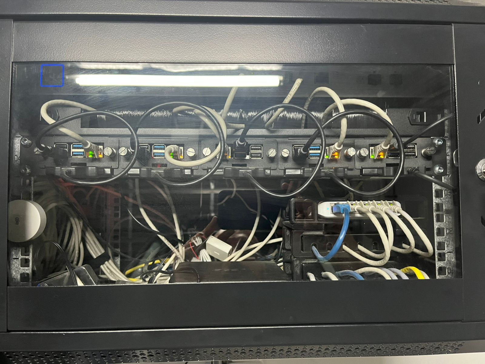
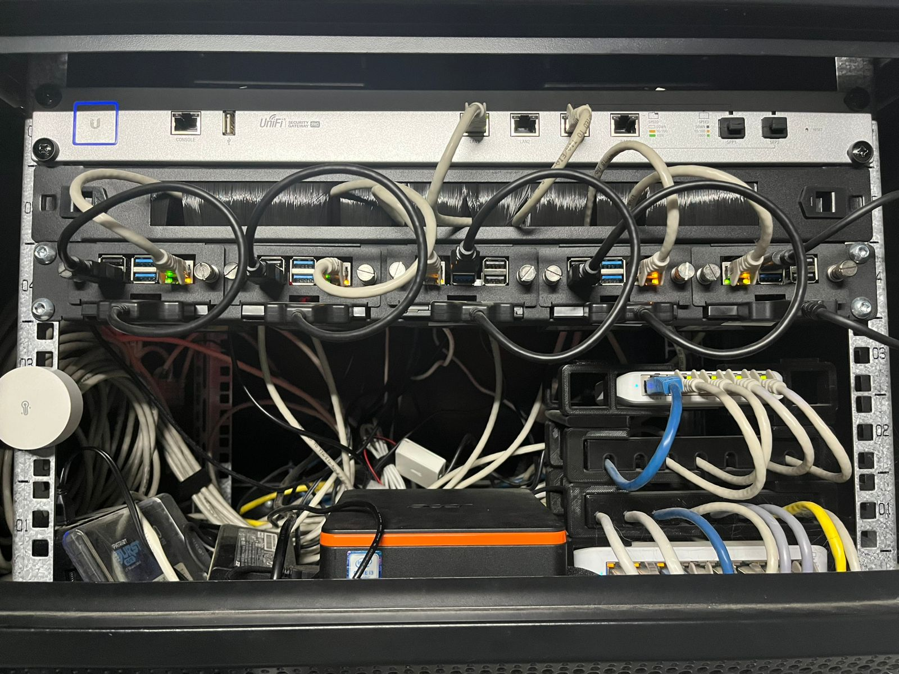

Five Raspberry Pis in a rack, doing their best

The rack, closed
The case is clear acrylic. Closing it changes nothing. The cables are fully visible from every direction at all times and that is simply the situation.

The rack, open
The Pis are in there. The cables are also in there. Opening the door mostly just removes the last pretence that anything is under control.
The cable management is not hidden by the closed panel because the panel is transparent acrylic. This was a choice made by the rack manufacturer. It was adopted by the cluster owner with full awareness of the consequences and no intention of addressing them.